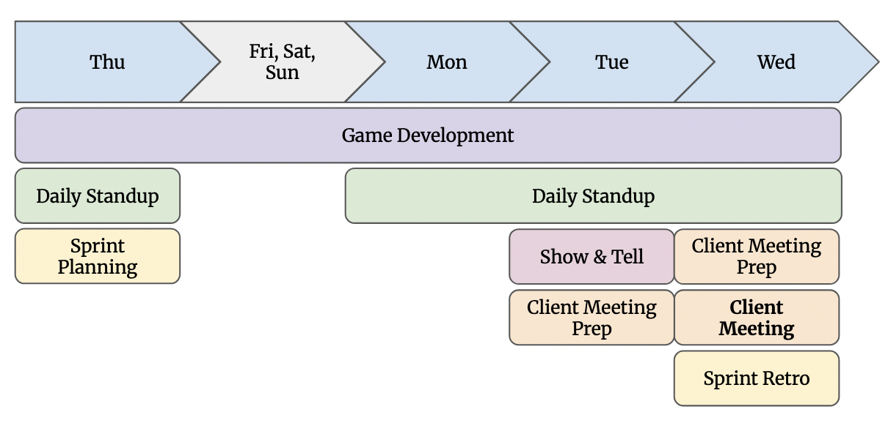

Big Country: Unreal Game with Companion
Game Development
Role: Developer (Product-Focused) | Context: Tidepool Games x Centre for Digital Media
Platform PC, Console (in development)
Overview
Big Country is an open-world exploration and adventure game developed in collaboration with Tidepool Games.
The project was delivered by a cross-functional team of developers, animators, and project managers,
culminating in a playable demo prepared for presentation at the Game Developers Conference (GDC), the world's largest annual conference for game developers.
I contributed across development and coordination, supporting both gameplay implementation and structured project execution.
Check the project page and demo video of the game here.
The Process
We followed an agile, iterative development process to manage scope, align disciplines, and ship toward a fixed external milestone.
- Work was organized into time-boxed sprints with clearly defined goals
- Tasks were broken down and tracked across engineering, animation, and design
- Regular stand-ups and reviews ensured fast feedback and goal alignment

Documentation & Alignment
I contributed to core documentation that supported execution:
- Game Design Document (GDD) to define gameplay systems and experience goals
- Game Technical Document (GTD) to align on technical scope and constraints
These documents helped translate creative intent into actionable development work.
My Role
I worked at the intersection of production, product, and development, helping the team ship a cohesive demo on a fixed external deadline.
- I coordinated work across animators, programmers, and project managers to maintain sprint alignment by supporting agile workflows, task tracking and milestone planning.
- I planned and facilitated gameplay playtests, gathering player feedback.
- As one of the developers, I introduced structured Perforce commit conventions to reduce blockers from exclusive-write files and cutting wait times on overlapping tasks.
- I also implemented gameplay features including player-dog fetch mechanics, UI feedback systems, object interaction logic by creating Blueprint classes in Unreal Engine 5.